1001. 基本数据类型
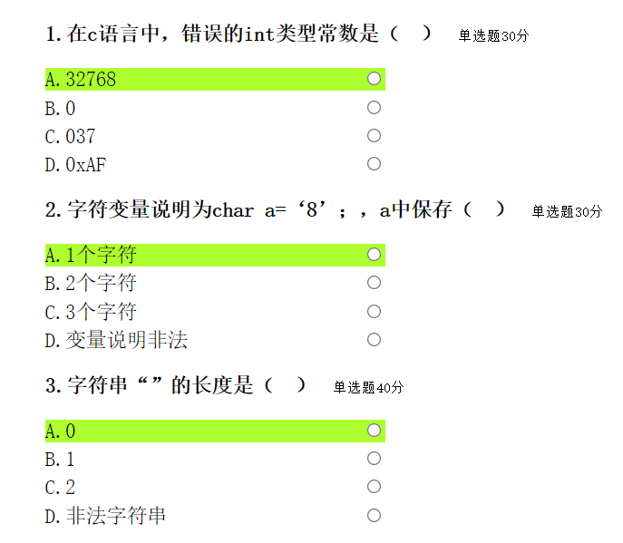
1. 答案: A
注释: int 型变量的长度由计算机的编译系统决定，基于dos16的C编译器中int型变量是16位的;在64位机器上运行win32系统，C编译器中int型变量都是32位的。16位的int型变量表示整数的范围是-32768~32767，本书中int变量按16位二进制系统考虑。
2. 答案: A
3. 答案: A
注释: C语言中的字符串可以是空字符串。
1002. 简单二进制应用
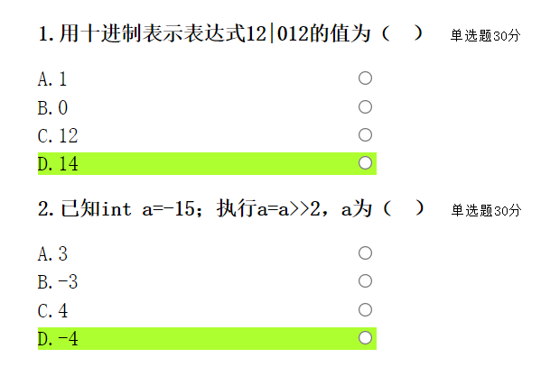
1. 答案: D
注释:此题是十进制数12和八进制数012按位进行或运算。
2. 答案: D
注释: -15的补码形式: 111 1111 1111 0001，右移2位后为111 111111 1100 (十进制-4)。做右移运算，最高位是0时补0，最高位是1时补1;做左移运算，最低位补0。
1003. 基本表达式运算
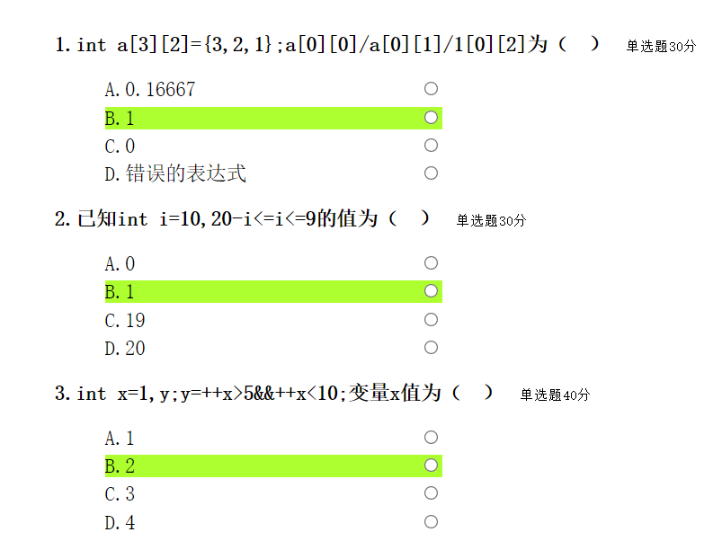
1. 答案: B
注释: C语言对数组元素在内存中按行排列进行保存，虽然在引用2数组元素时，习惯将6个元素下标写为a[0][0]、a[0][1]、a[1][0]、a[1][1]、a[2][0]、a[2][1],但C语言编译器不对数组元素进行下标越界检查，下标运算符“[]”的功能是根据数组的首地址和给出的下标进行运算决定元素的地址，对数组元素进行引用。二维数组元素地址的运算规则是:元素地址=数组首地址+第1个下标*每维长度+第2个下标*每个元素长度此题中，此数组的前3个元素的值分别是3、2、1,其余元素数值为0。a[0][2]是数组的第3个元素。
2. 答案: B
C语言对数组元素在内存中按行排列进行保存，虽然在引用2数组元素时，习惯将6个元素下标写为a[0][0]、a[0][1]、a[1][0]、a[1][1]、a[2][0]、a[2][1],但C语言编译器不对数组元素进行下标越界检查，下标运算符“[]”的功能是根据数组的首地址和给出的下标进行运算决定元素的地址，对数组元素进行引用。二维数组元素地址的运算规则是:元素地址=数组首地址+第1个下标*每维长度+第2个下标*每个元素长度此题中，此数组的前3个元素的值分别是3、2、1,其余元素数值为0。a[0][2]是数组的第3个元素。
3. 答案: B
注释:当根据一个运算对象的值即可决定逻辑运算“&&”的结果时，则另一个运算对象不做处理。此题根据运算符号的优先级，先进行关系运算“++x>5”的结果是0，整个逻辑运算“&&”的结果是0，计算机不再对位于逻辑运算符“ &&”后面的部分进行扫描和处理。
1004. 循环控制结构
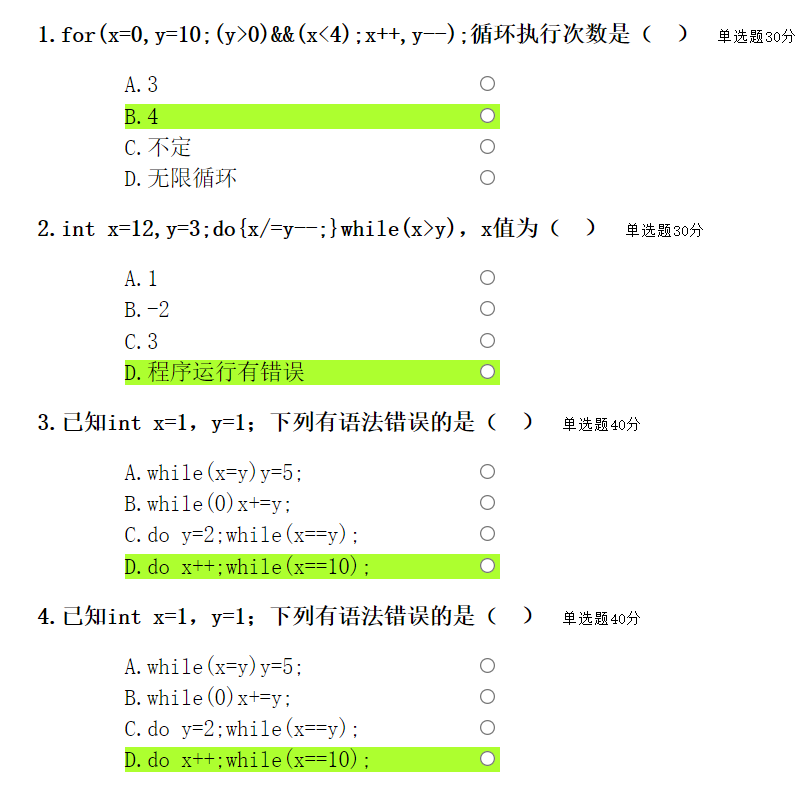
1. 答案: B
注释:每次循环交量x增加1、变量r减少1,当x=4、y=6时循环终止，循环接执行了4次3。
2. 答案: D
注释:当除数y为0时，程序发生溢出错误。
3. 答案: D
注释:虽然选项A、B、C都是死循环，但是没有语法错误，而选项D中的 do-while 循环体中应该是一个语句，x++ 后面应有分号。
4. 答案: D
注释: 虽然选项A、B、C都是死循环，但是没有语法错误，而选项D中的 do-while 循环体中应该是一个语句，x++ 后面应有分号。
1005. 数组基础应用
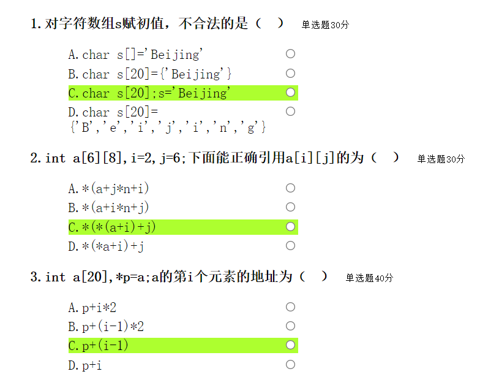
1. 答案: C
注释:选项A、B、D在定义数组的时候赋初值，3种方式都是合法的，而选项C的招设进赋值号左侧是数组s的首地址，它是一个地址常量，不允许对常量重新赋值5
2. 答案: C
注释：通过此题了解数组的保存机制。对于二维数组定义为a[i][i],则说明此数组以j个数为组，共有i组。数组名是数组的首地址，数组名与整数相加得到的 是某一组的首地址， 做*操作后得到的是此组中第一个数的地址，再与整数相加得到某数的地址，再做*操作则引用该数。选项A、B只做一次*操作，得到的结果是地址;选项D的功能是，经过二次*操作引用a[0][i]，再与整数j相加。
3. 答案: C
注释:在C程序中数组名就是数组的首地址，所以指针变量p保存的是数组第1个元素的地址。
1006. 变量存储类型与函数

1. 答案: A
注释:形参a是一个指针变量，用来接收实参传来的数组的首地址。
2. 答案: D
注释：在C语言中，程序与文件是不同的概念，一个程序可以由一个文件组成，也可以由多个文件组成;一个文件中又可以包含多个函数;函数是构成C程序的基本单位。变量的作用域因变量的存储类型不同而不同。auto和register类型的变量的作用 域是说明变量的当前函数;局部静态变量(定义在一个函数内部的static型的变量)的作用域是当前函数，全局静态变量(定义在函数外面的static型的变量)的作用城是当前文件，即可以跨越同文件中的不同函数; 外部变量的作用域是整个程序，即外部变量的作用域可以跨越多个文件。
3. 答案: A
注释:这是关于函数类型的定义。
1007. 数组进阶应用
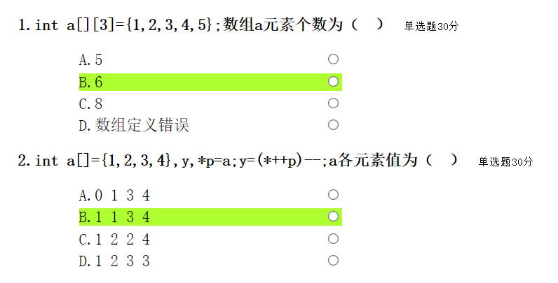
1. 答案: B
注释:在给出数组元素初值的情况下，C语言允许数组定义时省略第一个下标，此时编译系统将根据初值的个数确定下标。此例中由于给出5个初值，而第二维长度为3，所以第一维的长度是2。
2. 答案: B
注释：p原先指向数组的第一个元素，做前加1运算后指向第二个元素，做*操作取内容赋给变量y，则y保存的数值是2;然后数组的第二个元素再减1, a[1]变为1。
1008. 字符串应用
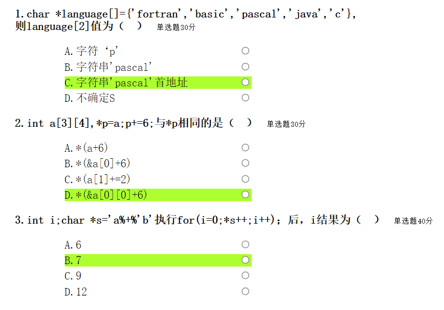
1. 答案: C
注释: "langiage" 是指针数组，数组元素保存的是字符串的首地址。
2. 答案: D
注释：p是指向整型变量的指针，其初始指向数组a的第1个元素，执行语句“p += 6;" 后指向数组的第7个元素，即指向a[1][2]。选项A中的a和选项B中的&a[0]是数组的首地址，此地址与整型数进行运算时，以4个整型数为一组的长度为增量，因数组仅有这样的3组数，执行加6后得到的地址已经超出数组a的范围。选项C是错误的，因为数组名是地址常量，不允许重新赋值。选项D中，用&a[0][0]得到第1个元素的地址，此地址与整型数进行运算时，所以选项D是a[1][2]。
3. 答案: B
注释:当指针变量:指向字符串结束标志时,循环结束。循环进行了8次，i从0开始到8结束。
1009. 指针基础运用
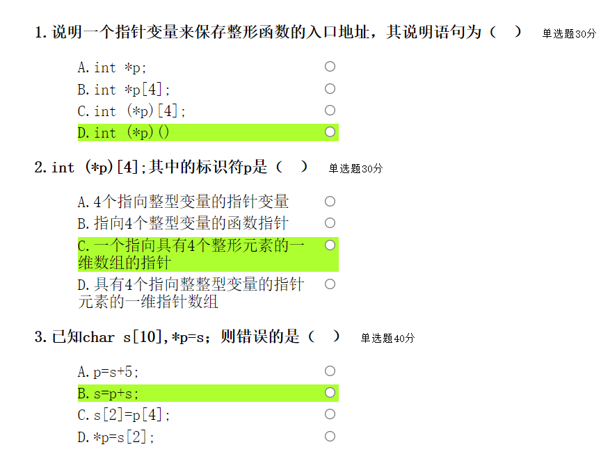
1. 答案: D
注释:选项A说明的是指向整型数据的指针变量;选项B说明的是一个指向整型数据的指针数组:选项C说明的是一个指向整型数组的指针变量:选项D说明的是一个指向整型函数的指针变量，用来保存整型函数的人口地址。在说明语句中，根据运算符号的优先级来判断被说明对象的性质。此题中涉及的3个运算符号中，小括号“()"和方括号“[]”是最高级别的运算符号， 而指针运算符“*”的优先级要低-一级。 在选项B中p首先与“[]”结合而被编译系统解释为一个数组名，因其前面的“*”号说明它是指针数组。在选项 C. D中先要解释左侧“()”中的内容，根据*p可知p是一个指针变量名:选项C中第一个小括号后是“[]”，则p是指向数组的指针变量，方括号中的4” 说明4个整型数为一组; 选项D中第一个小括号后是“0)"，则p指向函数的指针变量。
2. 答案: C
注释：此题中由于*和p被小括号括起，所以p应被解释为一个指针变量，而后的下标运算符“[]”说明所指向的对象是4个int型元素为一组的一维数组。
3. 答案: B
注释:选项B有两处错误，一是数组名是地址常量，不能出现在赋值号的左侧;工是指针变量只能和整数做加法，不能和作为地址常量的数组名相加。
1010. 指针进阶应用
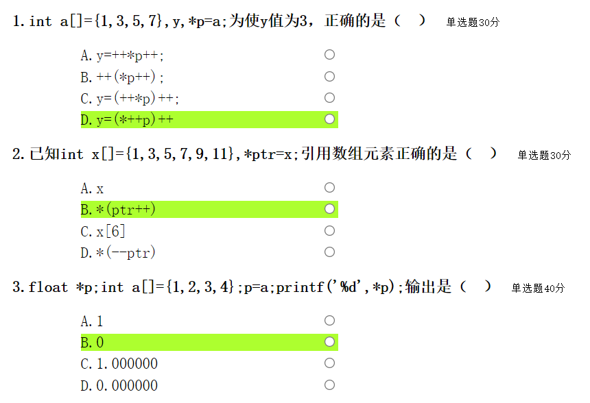
1. 答案: D
注释:此题目的是正确区分运算的对象和运算顺序。选项A中，对p做*操作运算对象为a[0]，做前加1后a[0]变为2,将其赋给y,最后对p加1，指针变量保存数组a首地址前面两个字节的地址;选项B中，小括号没有改变运算的顺序，运算结果与选项A相同;选项C中，后加1的运算对象是a[0]，p的指向没有改变;选项D中，先对p做前加1运算，其指向a[1], 做*操作将3赋给y,然后a[1]做加1变为4。
2. 答案: B
注释：选项A是数组的首地址;选项B首先对pur做*操作引用数组元素x[0]，然后对p中加1，指向x[1];选项C中的数组下标越界;选项D中对指针变量ptr做前减1运算后，ptr指向数组的前面，也越界。
3. 答案: B
注释:指针变量的数据类型说明了指针变量所指向的目标变量的数据类型，两者必须一致，否则会发生错误。
1011. 函数递归
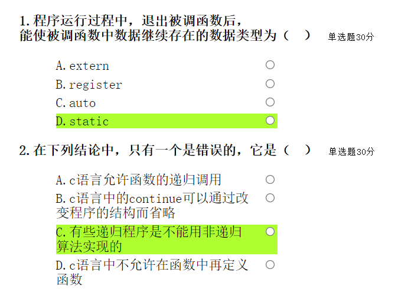
1. 答案: D
2. 答案: C
注释：递归程序都可以用非递归算法实现。
1012. 基本数据结构
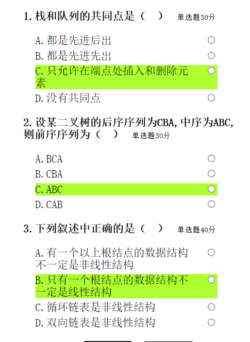
1. 答案: C
注释:栈和队列都是操作受限的线性表，只允许在端点处进行插入和删除。二者的区别是：栈只允许在表的一端进行插入或删除操作，是一种后进先出的线性表；而队列只允许在表的一端进行插入操作，在另一端进行删除操作，是一种先进先出的线性表。答案选择C
2. 答案: C
注释：后序序列为CBA，中序序列为ABC，则说明，A为根结点，并且B和C均在A的右子树上结点B和C中，后序序列为CB，中序序列为BC，则说明结点C在结点B的右子树上，据分析可得，该二叉树的前序序列为ABC，答案选择C。
3. 答案: B
注释:线性结构应满足：①有且只有一个根结点；②每个结点最多有一个前件，也最多有一个后件。有一个以上根结点的数据结构一定是非线性结构，所以A错误。树只有一个根结点，但是树是非线性结构，B项正确。循环链表和双向链表都是线性结构。答案选择B选项。